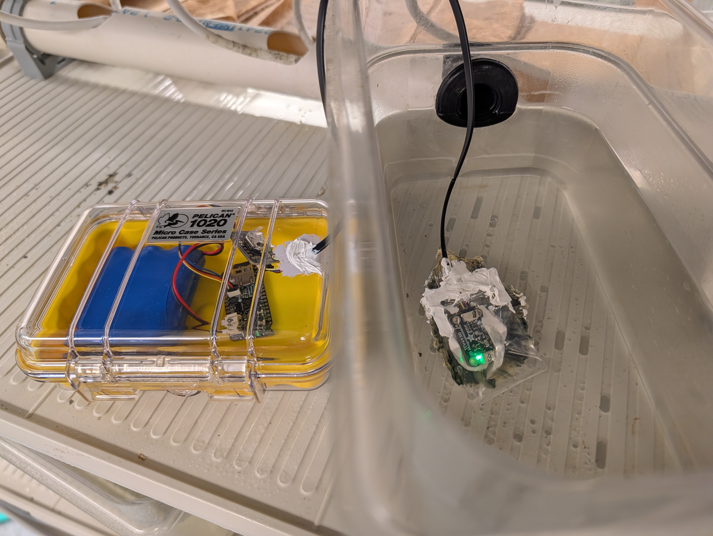
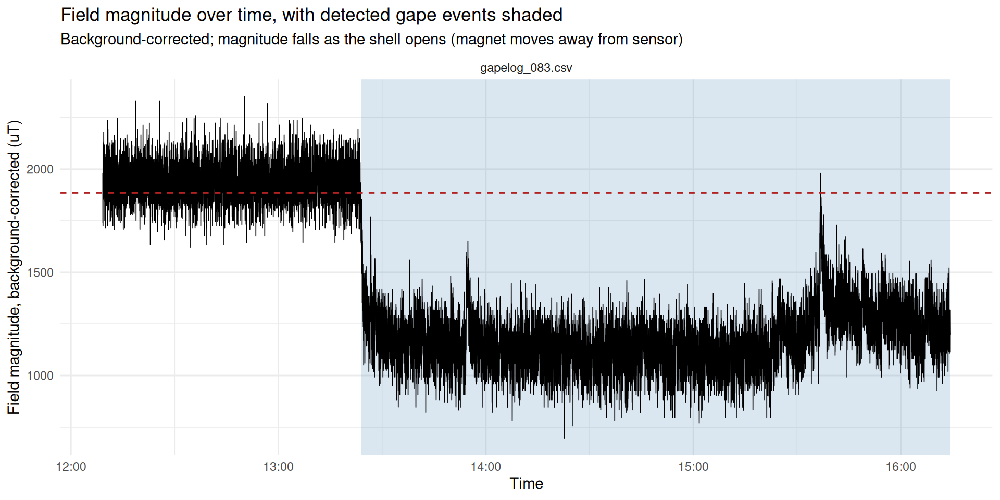
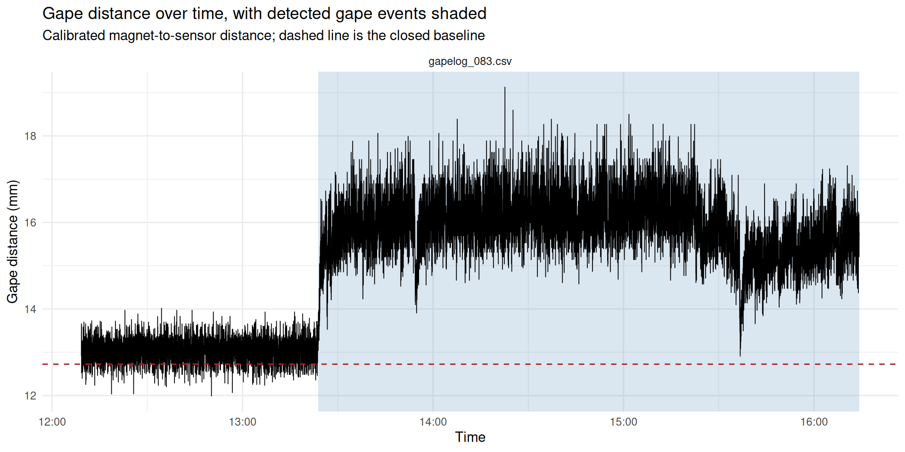
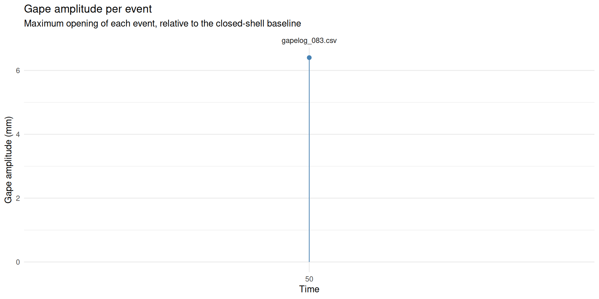
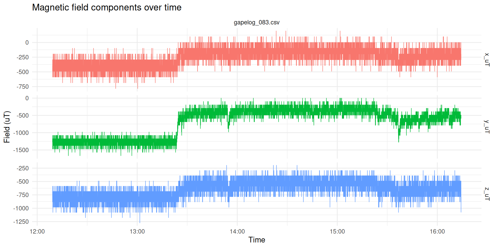
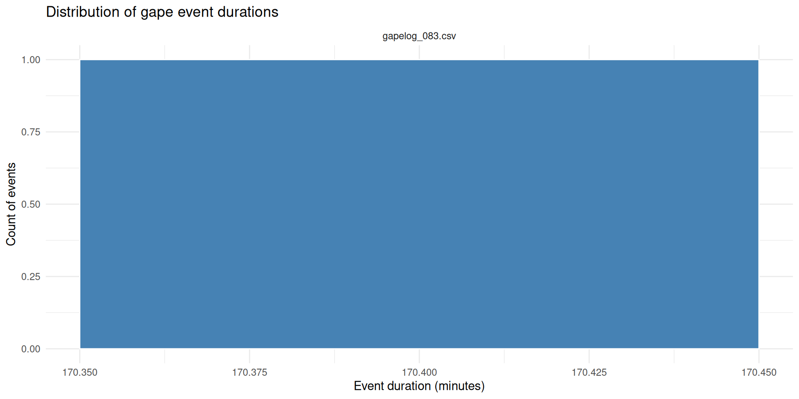
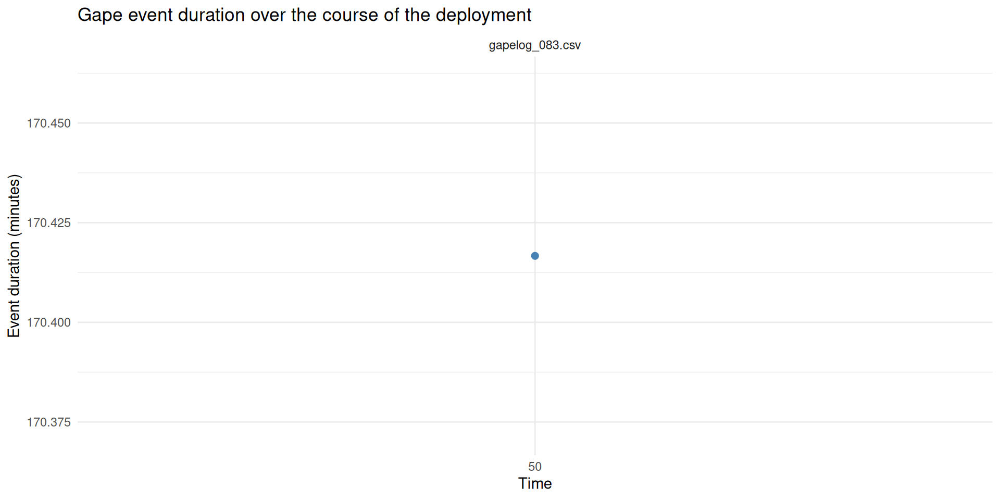
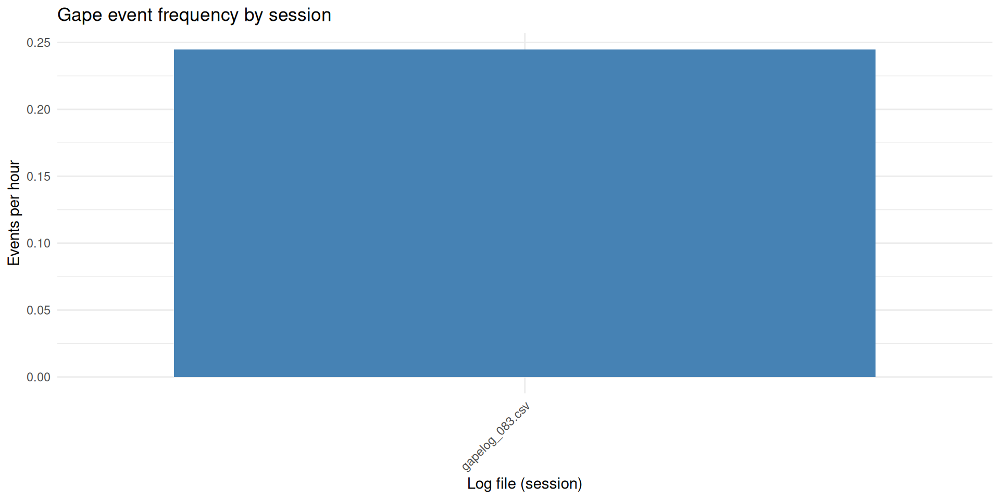

Data Analysis - Prototype M.gigas Gaping Pilot Project
2026
gaping
Magallanas gigas
Pacific oyster
magnetometer
RP2040
adalogger
Author
Sam White
Published
October 6, 2026
INTRO
On 20261001 I deployed our first gape logger prototype in the lab.

Gape monitor prototype. On the left is a closed, waterproof Pelican Case with yellow insert, a blue battery pack, and an Adafruit Feather Adalogger RP2040 microcontroller, connected to a real-time clock module via wires. On the right, the wire connects to an Adafruit 3-axis magnetometer. It is sealed in a small plastic bag with white marine sealant/adhesive. The bag is attached to the top valve of a Pacific oyster using that same marine sealant/adhesive. The green LED on the magnetometer is illuminated. The oyster and magnetometer are in a small plastic container with seawater.
I retrieved the data today (about five days after deployment).
MATERIALS & METHODS
Important
This was prototype Unit B. This is important because the analysis requires the correct calibration info for the corresponding unit magnetometer!
Gape monitor prototype consists of the following:
a 3.7V 6600mAh lithium ion battery pack (Adafruit)
Feather Adalogger RP2040 microcontroller with 16GB microSD card (Adafruit)
Connections between components are I2C STEMMA QT. This type of connection is limited to a max of 400mm between components and severely limits the range for deployment. This is definitely a serious shortcoming of this prototype.
The magnetometer was sealed in a small plastic bag with white 3M marine adhesive sealant. The bag was attached to the top valve of a Pacific oyster using that same 3M marine adhesive sealant.
Three magnets (4mm x 2mm neodynium) were secured near the leading edge of the bottom valve.
Note
The sealant for the magnetometer and the magnets was allowed to cure at room temp in the fume hood for ~2hrs prior to returning the oyster to water.
The oyster was kept in a small plastic container with Instant Ocean at room temp in FTR 210. It did not get fed, nor have water flow-through.
RESULTS
Prototype Performance
Well, the first result is that the magnetometer got fried, due to water leaking into the bag:
Shorted out magnetometer in clear plastic bag containing water, still mounted to top of oyster shell.
Looking at the data, it appears data was recorded for ~4hrs before the leak occurred and shorted out the magnetometer.
The Oyster
Secondly, when I retrieved the unit today, the oyster was dead and had clearly been dead for some time. It’s soft tissues were essentially liquified.
The data shows that the oyster opened ~1hr after deployment and remained opened until the magnetometer leaked. It seems safe to assume the oyster was still alive at that point…
Data Analysis
Below is the analysis, which is primarily taken from our gaping_analysis.Rmd (GitHub). It’s been slightly modified to require the user to enter the number of magnets used. I’ll be updating the source Rmd file to utilize this as well.
The analysis also relies on the correct calibration file (calibration_unit-B.Rmd), which has been copied to this notebook entry folder.
OVERVIEW
This notebook reads the CSV log(s) produced by the CircuitPython datalogger running on the Feather RP2040 Adalogger (gapelog_001.csv, gapelog_002.csv, … on the SD card), reconstructs real-world timestamps, detects gape events, and plots the resulting time series.
Data format on disk (wide form): one row per sample, with the three simultaneous magnetic field components as columns:
column
meaning
timestamp
YYYY-MM-DDTHH:MM:SS from the onboard DS3231 RTC, or T+123.456s (seconds since that session started) if the RTC wasn’t detected at boot
rp2040_uid
the Adalogger’s factory-burned unique ID - used to pick that board’s calibration curve
x_uT
magnetic field, X axis, microtesla
y_uT
magnetic field, Y axis, microtesla
z_uT
magnetic field, Z axis, microtesla
Wide form is kept on the device and on disk because X/Y/Z are simultaneous components of one field vector, not independent long-form observations - computing field magnitude, per-axis deltas, etc. all need all three values from the same row. We pivot to long form only for specific plots below.
One file per power-on. The logger starts a new numbered file every time the board boots, so each gapelog_NNN.csv is exactly one session. Session identity comes from the filename - no need to infer reboots from the data.
Onboard real-time clock. The board has a battery-backed DS3231 RTC, so timestamp is normally an absolute wall-clock value straight off the device - no manual bookkeeping needed. If the RTC isn’t detected at boot (and that failure is recorded in eventlog.csv on the card, see below), the script falls back to a relative T+123.456s marker for that whole session, and this notebook derives elapsed_s from either form so the downstream analysis code is the same regardless.
SETUP
Libraries
Analysis parameters
All user-configurable values are assigned here - edit this chunk for your deployment and nothing else below should need changing.
Code
# ---- Data location -------------------------------------------------------# Directory holding the CSV files copied off the SD card, and the filename# pattern to match. Every matching file is treated as one logging session.# `post_dir` (set above, in the libraries chunk) is this document's own# folder as an absolute path - reliable regardless of the working directory# chunks happen to run with.data_dir <- post_dirfile_pattern <-"^gapelog_[0-9]+\\.csv$"# Timezone the onboard RTC was set in (see set_rtc.py) - used to parse the# absolute timestamps it writes.deployment_tz <-"America/Los_Angeles"# ---- Gape event detection -----------------------------------------------# The magnet sits on one valve, the magnetometer on the other: as the shell# OPENS the magnet moves away and field magnitude FALLS. So a gape event is# a sustained DROP in magnitude below a threshold.## The threshold can be set three ways:# "noise" - computed per session from the spread (SD) of the# closed-shell baseline itself: threshold = closed_mean -# n_sd_threshold * closed_sd. This ties the cutoff to how# noisy that particular session's signal actually is, so a# "gape" is a drop that's statistically distinguishable from# background noise, not an arbitrary fractional drop.# RECOMMENDED DEFAULT.# "relative" - computed per session as a fixed fractional drop below the# closed-shell baseline value (kept for comparison /# backward compatibility - doesn't account for how noisy the# signal is).# "absolute" - a fixed microtesla value you supply.threshold_method <-"noise"# Used for both "noise" and "relative" methods: the quantile of magnitude# taken as representative of "fully closed" (magnet closest to sensor).baseline_quantile <-0.90# Used when threshold_method == "noise":# The closed-baseline mean/SD are estimated from samples at/above# `baseline_quantile`. n_sd_threshold sets how many SDs below that mean a# sample must fall to count as "open" - larger values are more conservative# (fewer false-positive events from sensor noise), smaller values are more# sensitive. 3 SD is a common starting point for "clearly not noise".n_sd_threshold <-3# Used when threshold_method == "relative":gape_drop_frac <-0.10# open if magnitude < baseline * (1 - this)# Used when threshold_method == "absolute":gape_threshold_uT <-40# ---- Event filtering ----------------------------------------------------# Reject blips and bridge momentary re-closures, so sensor noise doesn't# inflate the event count.min_event_duration_s <-30# discard "open" runs shorter than thismin_gap_between_s <-30# merge two events separated by less than this# ---- Gape distance calibration -------------------------------------------# Convert field magnitude to an actual gape distance in mm, using the curves# fit by the per-unit calibration notebooks. Set FALSE to skip it entirely -# every field-magnitude-based result below still works without calibration.apply_calibration <-TRUE# Coefficient CSV(s) written by `calibration_unit-*.Rmd`. Pass as many as you# like (e.g. all three units); the right row is selected per session by# matching rp2040_uid AND magnet count. Built from `data_dir` for the same# reason `data_dir` itself is an absolute path - see the libraries chunk.coef_path <-file.path(data_dir, "calibration-coefficients_Unit-B.csv")# Deployment metadata: which magnet count each log file was recorded with.# The logger records the board UID but NOT the magnet count, so this is the# only place that association exists.## The general version of this (see `read-deployment-metadata` below) reads a# `deployment_metadata.csv` with one row per log file - built for a real# deployment with many oysters/boards/sessions, where magnet count can# differ file to file. This pilot is a single oyster on a single log file,# so that whole CSV collapses to one value: just set it here.## If this notebook ever covers more than one oyster/magnet-count at once,# switch `read-deployment-metadata` back to reading a CSV keyed by# `source_file` instead of broadcasting these two values to every file.n_magnets_used <-3# magnets glued to this oyster's valvepilot_oyster_id <-"oyster_1"# cosmetic label only - not used in any calculation# Which fitted model to apply: "best" (lowest AIC per magnet count, as marked# in the coefficient CSV), or force "offset" / "power" to compare them.calibration_model <-"best"
timestamp_raw holds either an absolute RTC reading (YYYY-MM-DDTHH:MM:SS) or, when the DS3231 wasn’t detected at boot, a relative marker (T+123.456s = seconds since that session started - see eventlog.csv on the card for the matching RTC_INIT_ERROR row). A session is treated as absolute-time only if every row in it parsed as a real RTC reading; otherwise elapsed_s is derived from the relative marker instead, so every downstream chunk below (all written in terms of elapsed_s) works the same either way.
Code
n_sessions <-n_distinct(raw$session_id)is_relative <-str_starts(raw$timestamp_raw, "T\\+")gaping <- raw %>%mutate(abs_time =if_else( is_relative, as.POSIXct(NA, tz = deployment_tz),ymd_hms(timestamp_raw, tz = deployment_tz, quiet =TRUE) ),relative_s =if_else( is_relative,as.numeric(str_match(timestamp_raw, "^T\\+([0-9.]+)s$")[, 2]),NA_real_ ) ) %>%group_by(session_id) %>%mutate(timestamp =if (all(!is.na(abs_time))) abs_time elseas.POSIXct(NA, tz = deployment_tz),elapsed_s =if (all(!is.na(abs_time))) {as.numeric(difftime(abs_time, min(abs_time), units ="secs")) } else { relative_s -min(relative_s, na.rm =TRUE) } ) %>%ungroup() %>%select(-abs_time, -relative_s) %>%mutate(date =as_date(timestamp),time =format(timestamp, "%H:%M:%S") )# Require EVERY session to have real RTC timestamps before plotting on a# datetime axis - a partial mix would render some panels on real time and# others on nothing, which is easy to misread. `elapsed_s` (above) has no# such restriction and is always populated, so it's the safe common axis# to fall back on for the combined plots when sessions are mixed.has_real_time <-!any(is.na(gaping$timestamp))cat(sprintf("%d session(s), %d total samples. Absolute timestamps for ALL sessions: %s\n", n_sessions, nrow(gaping),if (has_real_time) "YES (from onboard RTC)"else"NO (falling back to elapsed_s for combined plots)"))
1 session(s), 14703 total samples. Absolute timestamps for ALL sessions: YES (from onboard RTC)
Some experiments mix RTC-timestamped and elapsed-only files (e.g. the RTC wasn’t detected on one boot). timestamp/date/time stay real per row for any session that has them, and elapsed_s is always populated for every session either way - only the combined multi-panel plots below fall back to elapsed_s for everyone when the mix isn’t uniform. Check which sessions are which here:
Field magnitude sqrt(x^2 + y^2 + z^2) is the primary gape proxy: it is rotation-invariant, so it doesn’t depend on exactly how the sensor is oriented relative to the magnet.
What is computed here is the raw magnitude, field_raw_uT - straight off the sensor, ambient field included. The quantity everything downstream actually uses, field_magnitude_uT, is that same magnitude with the ambient vector removed, and it cannot be computed yet: the background vector is a per-unit property that arrives with the calibration coefficients, so it is not known until the GAPE DISTANCE section has matched a curve to each session. See “Background correction” there.
Field magnitude answers “is the shell open?”. To answer “how far open?” the magnitude has to be pushed back through the calibration curve fit for that board, with that number of magnets:
\[ d = a B^{\,b} + c \]
Magnet count is part of the curve, not a detail: more magnets mean a stronger field at every distance, so the same reading maps to a different distance. Applying a 1-magnet curve to 3-magnet data reads a true 10 mm gape as roughly 6 mm, silently. The board UID is recorded on every data row, but the magnet count is not - it only exists in the deployment metadata below.
Everything in this section is skipped when apply_calibration = FALSE, and the field-magnitude results further down are unaffected either way.
Deployment metadata
One row per log file. n_magnets is the number that matters; oyster_id and notes are carried through for convenience but not used in any calculation.
This pilot is one oyster on one board, so there’s nothing to look up per file - n_magnets_used/pilot_oyster_id from the parameters chunk are just broadcast to every log file found above. (A multi-oyster deployment would replace this with read_csv(deployment_path, ...) keyed by source_file, same column names, so nothing downstream would need to change.)
Code
deployment <-if (!apply_calibration) {NULL} else {tibble(source_file =basename(log_files),n_magnets = n_magnets_used,oyster_id = pilot_oyster_id,notes =NA_character_ )}if (!is.null(deployment)) {kable(deployment, caption ="Deployment metadata as read")} else {cat("`apply_calibration = FALSE` - working in field magnitude only.\n")}
Deployment metadata as read
source_file
n_magnets
oyster_id
notes
gapelog_083.csv
3
oyster_1
NA
Calibration coefficients
Code
curves <-if (!apply_calibration) {NULL} else {stopifnot("One or more `coef_path` files do not exist."=all(file.exists(coef_path))) all_coefs <-read_csv(coef_path, show_col_types =TRUE, col_types =cols(rp2040_uid =col_character(), n_magnets =col_integer(),model =col_character(), is_best_model =col_logical() ))# These curves were fit to background-corrected field, so the background# vector has to come with them. A coefficient file written before that was# exported would otherwise be applied to raw field and silently misread# every distance - the failure this stop exists to prevent. bg_cols <-c("bg_x_uT", "bg_y_uT", "bg_z_uT") missing_bg <-setdiff(bg_cols, names(all_coefs))if (length(missing_bg) >0) {stop("Coefficient file(s) are missing the background column(s): ",paste(missing_bg, collapse =", "),"\nThese were written by an older version of the calibration ","notebooks. Re-knit `calibration_unit-*.Rmd` to regenerate them.") }if (calibration_model =="best") { all_coefs %>%filter(is_best_model) } else { all_coefs %>%filter(model == calibration_model) }}if (!is.null(curves)) { curves %>%select(unit, rp2040_uid, n_magnets, model, a, b, c, rmse_mm, fit_min_field_uT, fit_max_field_uT) %>%mutate(across(where(is.numeric), ~signif(.x, 5))) %>%kable(caption =sprintf("Available calibration curves (model = \"%s\")", calibration_model))}
Available calibration curves (model = “best”)
unit
rp2040_uid
n_magnets
model
a
b
c
rmse_mm
fit_min_field_uT
fit_max_field_uT
Unit-B
df6470a31b744b2e
1
offset
201.15
-0.35945
-3.5782
0.69021
492.25
28568
Unit-B
df6470a31b744b2e
2
offset
118.44
-0.20909
-12.6400
0.20818
530.45
30199
Unit-B
df6470a31b744b2e
3
offset
117.18
-0.17569
-17.9680
0.10043
625.21
32034
Match one curve to each session
Three things have to line up: the session’s UID (from the data), its magnet count (from the metadata), and a curve fit for that combination. Each is checked separately so a failure says which one is missing rather than just producing NA distances.
Code
session_curves <-NULLif (apply_calibration) {# UID comes from the data itself - one board per log file. session_uid <- gaping %>%group_by(session_id, source_file) %>%summarise(rp2040_uid =paste(unique(rp2040_uid), collapse ="|"),.groups ="drop") mixed_uid <- session_uid %>%filter(str_detect(rp2040_uid, fixed("|")))if (nrow(mixed_uid) >0) {stop("More than one rp2040_uid within a single log file:\n ",paste(mixed_uid$source_file, mixed_uid$rp2040_uid, collapse ="\n ")) }# Magnet count comes from the metadata - it is nowhere in the data. With# `deployment` now built by broadcasting `n_magnets_used`/`pilot_oyster_id`# to every file in `log_files` (see `read-deployment-metadata`), this# should never actually trigger - it's left in as a guard in case that# assumption is ever changed. missing_meta <-setdiff(session_uid$source_file, deployment$source_file)if (length(missing_meta) >0) {stop("No deployment metadata row (and so no magnet count) for:\n ",paste(missing_meta, collapse ="\n "),"\nCheck `n_magnets_used`/`pilot_oyster_id` in the parameters chunk.") } session_curves <- session_uid %>%left_join(deployment, by ="source_file") %>%left_join( curves %>%select(rp2040_uid, n_magnets, unit, model,cal_a = a, cal_b = b, cal_c = c, rmse_mm, bg_x_uT, bg_y_uT, bg_z_uT, fit_min_field_uT, fit_max_field_uT),by =c("rp2040_uid", "n_magnets") ) unmatched <- session_curves %>%filter(is.na(cal_a))if (nrow(unmatched) >0) {stop("No calibration curve for these UID / magnet-count combinations:\n ",paste(sprintf("%s (uid %s, %d magnet(s))", unmatched$source_file, unmatched$rp2040_uid, unmatched$n_magnets),collapse ="\n "),"\nEither the wrong `coef_path` is loaded, or that magnet count was ","never calibrated on that board." ) } session_curves %>%select(session_id, source_file, unit, rp2040_uid, n_magnets, oyster_id, model, cal_a, cal_b, cal_c, rmse_mm) %>%mutate(across(where(is.numeric), ~signif(.x, 5))) %>%kable(caption ="Calibration curve matched to each session")}
Calibration curve matched to each session
session_id
source_file
unit
rp2040_uid
n_magnets
oyster_id
model
cal_a
cal_b
cal_c
rmse_mm
1
gapelog_083.csv
Unit-B
df6470a31b744b2e
3
oyster_1
offset
117.18
-0.17569
-17.968
0.10043
Background correction
The calibration curves were fit to field with the ambient vector removed, so the same has to be done here before a curve is applied - otherwise the curve is being handed a different quantity than the one it was built from, and it answers confidently in the wrong units.
Ambient field adds as a vector, so it is subtracted per axis and the magnitude recomputed from the corrected axes. Subtracting it from the magnitude would be wrong.
field_magnitude_uT is defined here, and it is what the rest of the notebook uses - event detection included. A fixed vector offset distorts magnitude unevenly as the magnet moves, so the corrected signal is the better one to detect gapes on, not just to convert to millimetres.
With apply_calibration = FALSE there is no background to subtract (it arrives with the coefficients), so field_magnitude_uT falls back to the raw magnitude and every field-magnitude result below still works - it is just uncorrected, and the printout says so.
Code
if (apply_calibration) { gaping <- gaping %>%left_join( session_curves %>%select(session_id, n_magnets, cal_a, cal_b, cal_c, bg_x_uT, bg_y_uT, bg_z_uT, fit_min_field_uT, fit_max_field_uT),by ="session_id" ) %>%mutate(field_magnitude_uT =sqrt((x_uT - bg_x_uT)^2+ (y_uT - bg_y_uT)^2+ (z_uT - bg_z_uT)^2)) gaping %>%group_by(session_id, source_file) %>%summarise(bg_uT =sqrt(first(bg_x_uT)^2+first(bg_y_uT)^2+first(bg_z_uT)^2),mean_raw_uT =mean(field_raw_uT),mean_corr_uT =mean(field_magnitude_uT),shift_uT = mean_corr_uT - mean_raw_uT,.groups ="drop" ) %>%mutate(across(where(is.numeric), ~round(.x, 1))) %>%kable(caption =paste("Background removed per session (bg_uT is the","magnitude of the subtracted vector)"))} else { gaping <- gaping %>%mutate(field_magnitude_uT = field_raw_uT)cat("`apply_calibration = FALSE`: no background available, so","`field_magnitude_uT` is the RAW magnitude (ambient field included).\n")}
Background removed per session (bg_uT is the magnitude of the subtracted vector)
A power law extrapolates confidently and wrongly. Readings outside the field range the curve was fit over produce a number that looks fine and isn’t, so they are counted here rather than left to be discovered later.
Negative distances are the one failure that announces itself: they mean the field was stronger than anything seen during calibration, which usually means the deployed magnet sits closer than the closest calibration hold, or that the wrong magnet count is recorded in the metadata.
Code
if (apply_calibration) { extrapolation <- gaping %>%group_by(session_id, source_file) %>%summarise(n =n(),pct_below_range =100*mean(field_magnitude_uT < fit_min_field_uT),pct_above_range =100*mean(field_magnitude_uT > fit_max_field_uT),pct_negative_dist =100*mean(gape_distance_mm <0),.groups ="drop" ) extrapolation %>%kable(digits =2,caption ="Samples falling outside the calibrated field range") worst <-max(extrapolation$pct_below_range + extrapolation$pct_above_range)if (worst >5) {cat(sprintf(paste0("WARNING: up to %.1f%% of samples in a session fall outside the ","calibrated field range.\nThose distances are extrapolated - ","treat them as indicative only.\n"), worst)) } else {cat(sprintf("At most %.1f%% of samples per session are extrapolated.\n", worst)) }}
At most 0.0% of samples per session are extrapolated.
Cross-check the magnet count
The extrapolation check above catches a magnet count that is uncalibrated or wildly wrong. It does not catch a plausible one: recording 1 magnet in the metadata when 2 were deployed puts every reading comfortably inside the 1-magnet curve’s fitted range, so nothing errors and nothing is flagged - the distances are just quietly compressed. In a test case, a true 7.0 mm gape read as 4.9 mm and a 1.0 mm closed baseline read as 0.14 mm.
There is no way to recover the magnet count from the data alone, so the check has to be a human one. Below, the session’s closed and open field levels are pushed through every curve calibrated for that board. Compare the closed_mm column against how far the magnet actually sat from the sensor when the shell was shut: if the selected row disagrees with the bench measurement and another row matches it, the metadata is wrong.
What each calibrated magnet count would imply for this session
session_id
source_file
n_magnets
selected
closed_mm
open_mm
swing_mm
1
gapelog_083.csv
1
9.56
13.03
3.46
1
gapelog_083.csv
2
11.58
15.11
3.53
1
gapelog_083.csv
3
<- selected
12.91
16.65
3.74
GAP EVENT DETECTION
Threshold and open/closed state
The "noise" method characterizes the closed-shell baseline as a distribution, not a single value: samples at/above baseline_quantile are taken as “closed”, and their mean and SD describe that session’s baseline noise. The threshold then sits n_sd_threshold SDs below that mean, so a gape event is a drop that’s statistically distinct from background noise - not just a fixed percentage below baseline, which says nothing about whether that drop is bigger than the sensor’s own jitter.
Contiguous runs of is_open become candidate events; runs shorter than min_event_duration_s are dropped, and events separated by less than min_gap_between_s are merged into one.
Code
# 1. Contiguous runs of the same open/closed state, per session.runs <- gaping %>%group_by(session_id) %>%mutate(run_id =cumsum(is_open !=lag(is_open, default =first(is_open)))) %>%group_by(session_id, source_file, run_id, is_open) %>%summarise(start_s =min(elapsed_s),end_s =max(elapsed_s),start_time =min(timestamp),end_time =max(timestamp),n_samples =n(),mean_magnitude_uT =mean(field_magnitude_uT),min_magnitude_uT =min(field_magnitude_uT),.groups ="drop" ) %>%mutate(duration_s = end_s - start_s)# 2. Keep open runs long enough to count as real events.events <- runs %>%filter(is_open, duration_s >= min_event_duration_s) %>%arrange(session_id, start_s)# 3. Merge events separated by a shorter closure than min_gap_between_s.events <- events %>%group_by(session_id) %>%mutate(gap_before_s = start_s -lag(end_s),new_event =is.na(gap_before_s) | gap_before_s >= min_gap_between_s,event_group =cumsum(new_event) ) %>%group_by(session_id, source_file, event_group) %>%summarise(start_s =min(start_s),end_s =max(end_s),start_time =min(start_time),end_time =max(end_time),# Weighted mean must be computed BEFORE n_samples is collapsed to a# single sum, otherwise the weights vector no longer matches the values.mean_magnitude_uT =weighted.mean(mean_magnitude_uT, n_samples),min_magnitude_uT =min(min_magnitude_uT),n_samples =sum(n_samples),.groups ="drop" ) %>%group_by(session_id) %>%mutate(event_id =row_number(),duration_s = end_s - start_s,duration_min = duration_s /60 ) %>%ungroup()cat(sprintf("Detected %d gape event(s) across %d session(s).\n",nrow(events), n_sessions))
Distances are attached to the existing event table rather than folded into its construction, so event detection stays entirely field-magnitude-based and identical whether or not calibration is applied.
max_gape_mm is the furthest the valve opened during the event (the minimum field magnitude - field falls as the magnet moves away). gape_amplitude_mm measures that against the session’s closed baseline, which is usually the more meaningful number: it is how far the animal opened relative to shut, rather than the absolute magnet-to-sensor separation.
Code
if (apply_calibration &&nrow(events) >0) {# Distance at the closed-shell baseline, one value per session. closed_distance <- gaping %>%group_by(session_id) %>%summarise(closed_distance_mm =first(cal_a) *first(closed_mean_uT)^first(cal_b) +coalesce(first(cal_c), 0),.groups ="drop" )# Samples inside each event window. The join fans out to# (samples x events) within a session before filtering, which is fine at# these sizes; revisit if a deployment ever gets very long. event_samples <- gaping %>%select(session_id, elapsed_s, gape_distance_mm) %>%inner_join(events %>%select(session_id, event_id, start_s, end_s),by ="session_id", relationship ="many-to-many") %>%filter(elapsed_s >= start_s, elapsed_s <= end_s) event_distance <- event_samples %>%group_by(session_id, event_id) %>%summarise(max_gape_mm =max(gape_distance_mm),mean_gape_mm =mean(gape_distance_mm),.groups ="drop" ) %>%left_join(closed_distance, by ="session_id") %>%mutate(gape_amplitude_mm = max_gape_mm - closed_distance_mm) events <- events %>%left_join(event_distance, by =c("session_id", "event_id")) events %>%select(session_id, event_id, duration_min, closed_distance_mm, max_gape_mm, mean_gape_mm, gape_amplitude_mm) %>%kable(digits =2, caption ="Gape distance per detected event (mm)")} elseif (nrow(events) ==0) {cat("No events detected - no per-event distances to compute.\n")} else {cat("`apply_calibration = FALSE` - no per-event distances computed.\n")}
Shaded bands are detected gape events; the dashed line is the detection threshold.
Code
x_var <-if (has_real_time) "timestamp"else"elapsed_s"x_lab <-if (has_real_time) "Time"else"Elapsed time (s)"p_magnitude <-ggplot(gaping, aes(x = .data[[x_var]], y = field_magnitude_uT))if (nrow(events) >0) { event_bands <- events %>%mutate(xmin =if (has_real_time) start_time else start_s,xmax =if (has_real_time) end_time else end_s ) p_magnitude <- p_magnitude +geom_rect(data = event_bands,aes(xmin = xmin, xmax = xmax, ymin =-Inf, ymax =Inf),inherit.aes =FALSE, fill ="steelblue", alpha =0.20 )}p_magnitude <- p_magnitude +geom_line(linewidth =0.3) +geom_hline(aes(yintercept = threshold_uT), linetype ="dashed", color ="firebrick" ) +facet_wrap(~source_file, scales ="free_x", ncol =1) +labs(title ="Field magnitude over time, with detected gape events shaded",subtitle =paste("Background-corrected; magnitude falls as the shell opens","(magnet moves away from sensor)"),x = x_lab, y ="Field magnitude, background-corrected (uT)" ) +theme_minimal()p_magnitude

Gape distance over time
The same trace as above, in millimetres instead of microtesla - and the other way up, since distance rises as the shell opens. The dashed line is the closed-shell baseline distance.
Code
if (apply_calibration) { p_distance <-ggplot(gaping, aes(x = .data[[x_var]], y = gape_distance_mm))if (nrow(events) >0) { p_distance <- p_distance +geom_rect(data = event_bands,aes(xmin = xmin, xmax = xmax, ymin =-Inf, ymax =Inf),inherit.aes =FALSE, fill ="steelblue", alpha =0.20 ) } p_distance <- p_distance +geom_line(linewidth =0.3) +geom_hline(data = gaping %>%group_by(session_id, source_file) %>%summarise(closed_mm =first(cal_a) *first(closed_mean_uT)^first(cal_b) +coalesce(first(cal_c), 0), .groups ="drop"),aes(yintercept = closed_mm), linetype ="dashed", colour ="firebrick" ) +facet_wrap(~source_file, scales ="free_x", ncol =1) +labs(title ="Gape distance over time, with detected gape events shaded",subtitle ="Calibrated magnet-to-sensor distance; dashed line is the closed baseline",x = x_lab, y ="Gape distance (mm)" ) +theme_minimal() p_distance} else {cat("`apply_calibration = FALSE` - no distance plot.\n")}

How far each gape opened
Code
if (apply_calibration &&nrow(events) >0) { events %>%mutate(x_pos =if (has_real_time) start_time else start_s) %>%ggplot(aes(x = x_pos, y = gape_amplitude_mm)) +geom_segment(aes(xend = x_pos, yend =0), colour ="steelblue", linewidth =0.4) +geom_point(size =2, colour ="steelblue") +facet_wrap(~source_file, scales ="free_x", ncol =1) +labs(title ="Gape amplitude per event",subtitle ="Maximum opening of each event, relative to the closed-shell baseline",x = x_lab, y ="Gape amplitude (mm)" ) +theme_minimal()} else {cat("Nothing to plot (calibration off, or no events detected).\n")}

Per-axis time series
Pivoting to long form here is purely a plotting convenience - it is not how the data is stored.
Code
gaping_long <- gaping %>%select(session_id, source_file, all_of(x_var), x_uT, y_uT, z_uT) %>%pivot_longer(cols =c(x_uT, y_uT, z_uT), names_to ="axis", values_to ="field_uT" )p_axes <-ggplot(gaping_long, aes(x = .data[[x_var]], y = field_uT, color = axis)) +geom_line(linewidth =0.3) +facet_grid(axis ~ source_file, scales ="free") +labs(title ="Magnetic field components over time",x = x_lab, y ="Field (uT)" ) +theme_minimal() +theme(legend.position ="none")p_axes

Event duration distribution
Code
if (nrow(events) >0) { p_durations <-ggplot(events, aes(x = duration_min)) +geom_histogram(bins =30, fill ="steelblue", color ="white") +facet_wrap(~source_file, ncol =1) +labs(title ="Distribution of gape event durations",x ="Event duration (minutes)", y ="Count of events" ) +theme_minimal() p_durations} else {cat("No events detected - nothing to plot.\n")}

Event duration over time
Shows whether gape bouts get longer or shorter across the deployment.
Code
if (nrow(events) >0) { p_dur_time <- events %>%mutate(x_pos =if (has_real_time) start_time else start_s) %>%ggplot(aes(x = x_pos, y = duration_min)) +geom_point(size =2, color ="steelblue") +geom_line(linewidth =0.3, alpha =0.5, color ="steelblue") +facet_wrap(~source_file, scales ="free_x", ncol =1) +labs(title ="Gape event duration over the course of the deployment",x = x_lab, y ="Event duration (minutes)" ) +theme_minimal() p_dur_time} else {cat("No events detected - nothing to plot.\n")}

Inter-event intervals
Code
if (nrow(intervals) >0) { p_intervals <-ggplot(intervals, aes(x = interval_s /60)) +geom_histogram(bins =30, fill ="darkorange", color ="white") +facet_wrap(~source_file, ncol =1) +labs(title ="Time between consecutive gape events",x ="Interval between events (minutes)", y ="Count" ) +theme_minimal() p_intervals} else {cat("Fewer than 2 events per session - no intervals to plot.\n")}
Fewer than 2 events per session - no intervals to plot.
Events per hour by session
Code
p_rate <-ggplot(event_frequency, aes(x = source_file, y = events_per_hr)) +geom_col(fill ="steelblue") +labs(title ="Gape event frequency by session",x ="Log file (session)", y ="Events per hour" ) +theme_minimal() +theme(axis.text.x =element_text(angle =45, hjust =1))p_rate

NOTES / NEXT STEPS
Gape distance depends on the magnet count, not just the board. The UID check ties a log to the right unit; nothing in the data ties it to the right magnet count. A wrong-but-calibrated count passes silently and compresses every distance, so treat the magnet-count cross-check table as a step to actually read, not a formality - and record the closed-shell magnet-to-sensor distance at deployment so there is something to check it against.
Distances are only as good as the calibration range.rmse_mm in the matched-curve table is the fit error over the bench range; the extrapolation check reports how much of the deployment fell outside it.
Threshold calibration. The noise and relative methods both assume the animal is closed for most of the recording (the top 1 - baseline_quantile fraction of samples, default 10%, is treated as “closed” and used to characterize the baseline). If an animal gapes more than that, the baseline estimate - and for noise, the SD used to set the threshold - gets contaminated by open samples and the threshold drifts too low. If that assumption breaks, characterize known open/closed magnitudes on the bench and switch to threshold_method = "absolute".
Noise-based threshold (n_sd_threshold). The default of 3 SD below the closed-baseline mean is a starting point, not a calibrated value - check the closed_sd_uT column in the per-session table. A very small SD (a clean, low-noise sensor) with 3 SD may flag drops that are real but small; a very large SD (noisy signal, or a baseline window that already contains some open samples) may require a larger n_sd_threshold to avoid false positives. Vary it and confirm the detected event count and pct_samples_open are stable rather than an artifact of one setting.
Event filtering.min_event_duration_s and min_gap_between_s set how aggressively blips are rejected and near-adjacent gapes are merged. Vary them and re-render to check the event count is stable rather than an artifact of one particular setting.
Timestamps. The onboard DS3231 RTC supplies absolute time directly, so no manual start-time entry is needed. If a session shows “NO (relative T+ elapsed time only)” in the DATA IMPORT summary, check that session’s RTC_INIT_ERROR row in eventlog.csv to see why the RTC wasn’t detected at boot.